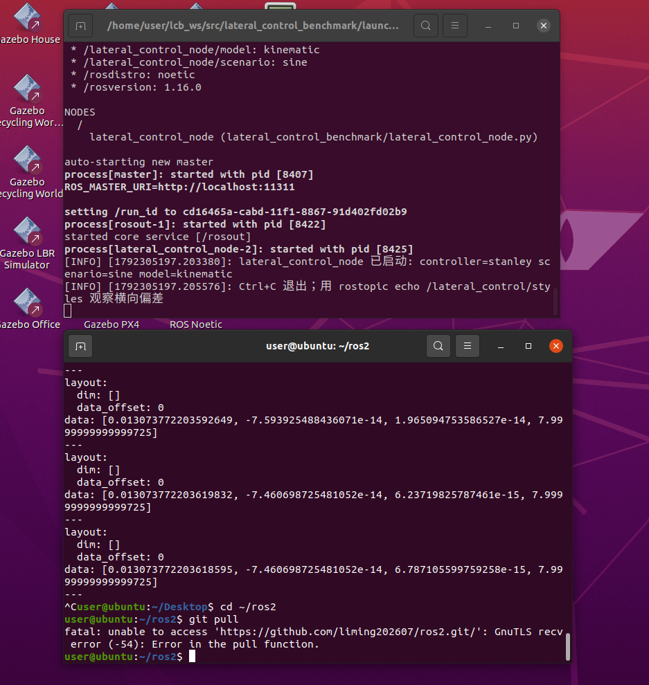
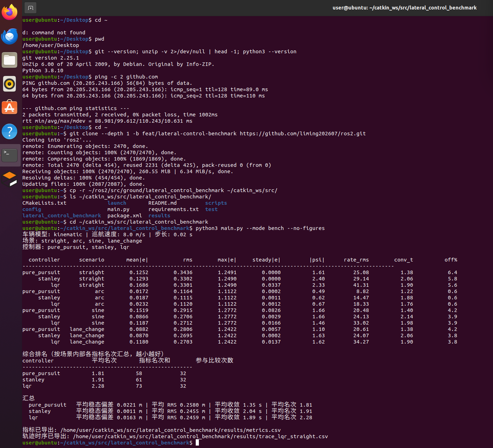
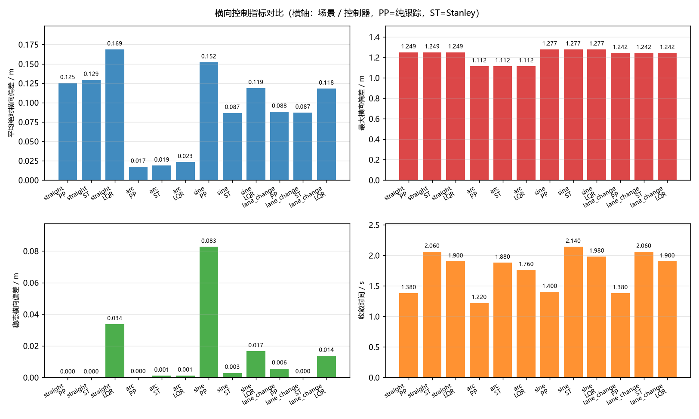
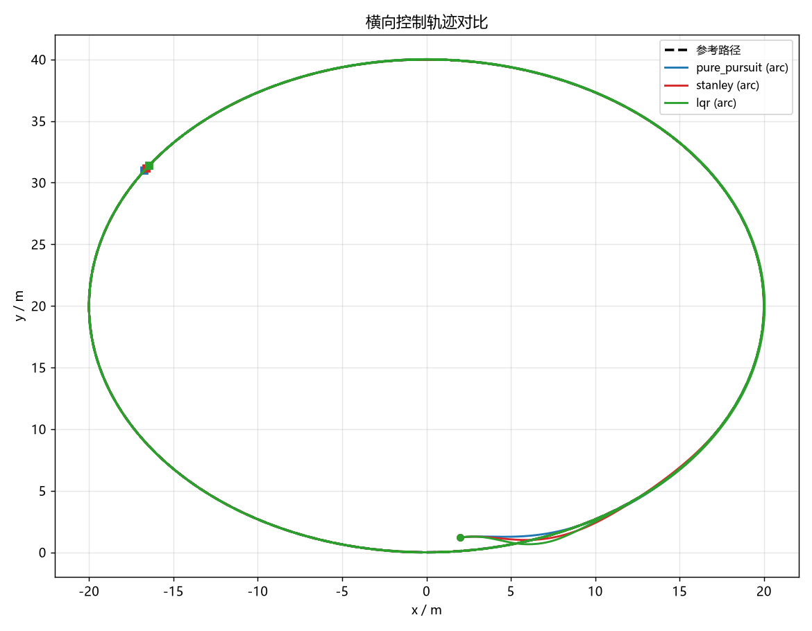
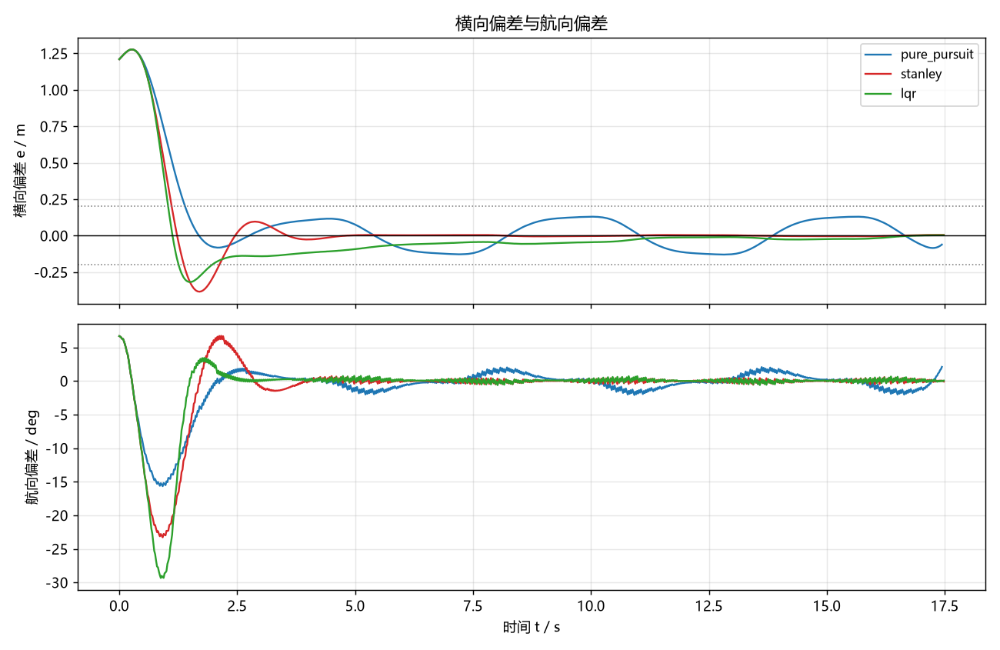
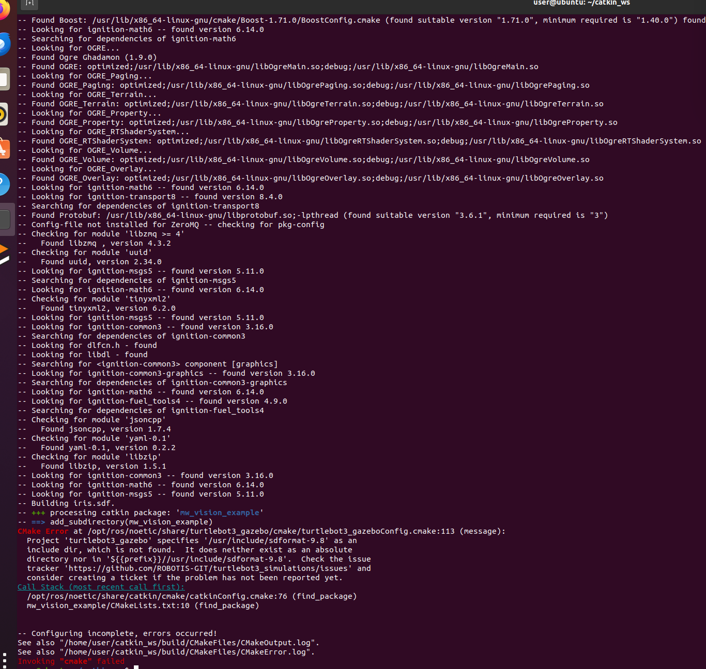

地面载具横向控制算法对比（纯跟踪 / Stanley / LQR）
本文档介绍 src/ground/lateral_control_benchmark 模块：在统一车辆模型、统一参考轨迹与统一指标下，
对三种最常用的横向控制算法做定量对比。
与仓库中其他地面载具模块的区别：本模块不依赖 CARLA / Gazebo / 任何仿真器，
核心算法与闭环仿真只用 NumPy，因此在没有 GPU、没有仿真环境的机器上也能完整复现；
同时提供 ROS 1 (Noetic) 节点与 roslaunch 入口。
- 源代码目录：
src/ground/lateral_control_benchmark - 一键复现：
python3 main.py --mode bench（详见模块README.md）
1. 三种算法原理
1.1 车辆运动学模型（三者共用）
后轴参考点的运动学自行车模型，状态 ，控制量 ：
其中 为轴距（默认 2.7 m）， 为前轮转角（左转为正）。
模块用 RK4 积分，步长 0.02 s。另提供线性二自由度动力学模型（含轮胎侧偏刚度、
质心侧偏角），用 --model dynamic 切换，用于检验控制器在中高速下的表现。
1.2 纯跟踪（pure pursuit）
取前视距离 （随车速自适应 ）处的路径点为目标:
特点：几何法、无曲率先验；前视点自带阻尼，收敛快；但在连续变曲率轨迹上残差较大。
1.3 Stanley
- 为路径切向相对车头的偏角；
- 为控制点横向偏差（左偏为正）；两项都带上述符号，若写反成本车相对路径的定义 却不翻号，闭环会变成正反馈（这是这类实现最常见的错误）。
- 第三项为曲率前馈，直接补偿路径弯曲造成的稳态偏差。
取点位置的影响：经典写法取前轴中心，而前轴比车辆实际位置超前一个轴距，
转弯时前馈取到的是车辆前方的曲率，会留下稳态偏差。本模块默认取后轴
（与运动学模型参考点一致），可用 use_rear_axle=False 复现经典写法：
| 场景 | 前轴（经典）稳态偏差 / m | 后轴（默认）稳态偏差 / m |
|---|---|---|
| 直线 | 0.0000 | 0.0000 |
| 圆弧 R=20 m | 0.4809 | 0.0011 |
| 正弦（幅值 3 m） | 0.4047 | 0.0029 |
| 双移线 | 0.0270 | 0.0002 |
1.4 LQR（本实现为 LQRI，带横向偏差积分）
误差状态 ，控制量为期望横摆角速度：
线性化后 ， 。解连续 Riccati 方程得到 ，控制律：
再折算为前轮转角 。
两个关键实现点：
- 必须有曲率前馈：否则反馈项要"持续存在"才能维持转向，表现为恒定的稳态偏差。
- 必须有横向偏差积分：只有比例状态反馈时，低速起步瞬态造成的偏差会被锁死 （实测直道残留约 0.05 m、圆弧上会累积到十几米）。加入积分后稳态误差趋于零， 积分项做了限幅与"只在中等误差时累积"的抗饱和处理。
- Riccati 方程用纯 NumPy 的 Hamiltonian 特征分解求解（
lqr_solver.py）， 不依赖scipy——少一个依赖就少一个"装不上"的失败点。
2. 算法流程
3. 运行步骤
3.1 离线（推荐）
cd src/ground/lateral_control_benchmark
python3 test/test_controllers.py # 66 项单元测试
python3 main.py --mode bench # 四场景 × 三控制器
python3 main.py --mode bench --model dynamic --speed 15
python3 main.py --mode sweep --param stanley.k --values 1.0,2.0,4.0
3.2 ROS 1 (Noetic)
mkdir -p ~/catkin_ws/src && cd ~/catkin_ws/src
cp -r ~/ros2/src/ground/lateral_control_benchmark .
cd ~/catkin_ws && source /opt/ros/noetic/setup.bash
catkin_make && source devel/setup.bash
roslaunch lateral_control_benchmark main.launch controller:=stanley scenario:=sine
话题：/lateral_control/odom、/lateral_control/cmd、/lateral_control/styles、
/lateral_control/metrics、/lateral_control/path（latched，可在 RViz 中看参考路径）。
在 Ubuntu 20.04 + ROS Noetic 上的实际运行记录：

图 1 上窗口为 roslaunch 启动日志——controller=stanley、scenario=sine、
model=kinematic 参数正确载入，节点 lateral_control_node 正常启动；
下窗口为 rostopic echo /lateral_control/styles 的输出，四个分量依次是
[横向偏差 e, 航向偏差 ψ, 前轮转角 δ, 车速 v]：e 已从初始 1.2 m 收敛到 0.013 m，
ψ 与 δ 都趋于 0（约 1e-14），车速稳定在 7.99 m/s，说明横向控制闭环确实在工作。
（下窗口里那次 git pull 报 GnuTLS recv error 是虚拟机访问 GitHub 的网络问题，
与本模块无关，之后改用压缩包导入代码继续验证。）
4. 评测方法（公平性设计）
| 维度 | 做法 |
|---|---|
| 车辆模型 | 三者共用同一模型与同一积分器 |
| 纵向速度 | 共用同一速度策略（巡航 + 曲率限速 + 一阶响应），差异只来自横向算法 |
| 初始条件 | 同一初始位姿：前方 2 m、横偏 1.2 m、航向偏 0.10 rad、初速 3 m/s |
| 指标口径 | 同一 evaluate() 计算 13 项指标，定义见下 |
| 参数调优 | 三者都用各自较优参数（见 README），避免"给对手用坏参数" |
指标定义：
- 平均绝对横向偏差 ：全时段平均；
- RMS ：对大偏差更敏感；
- 稳态偏差：轨迹末段 25% 的平均绝对偏差，反映稳态精度；
- 收敛时间： 首次进入并此后一直保持在 0.2 m 以内的时刻；从未满足则取总时长；
- 离道占比： 的采样占比，反映安全性；
- 转角变化率 RMS：转角差分得到，反映转向平顺性；
- 综合排名：在同一场景内部对各指标排名，再汇总平均名次（越小越好）， 避免"场景难度"直接决定名次。
- 测试速度：8 m/s（弯道自动限速）；
--speed可改，--model dynamic可切动力学模型。
5. 结果与性能评价
5.1 指标对比（巡航 8 m/s，运动学模型）
| 控制器 | 场景 | 平均|e| / m | RMS / m | 最大|e| / m | 稳态|e| / m | 收敛 / s |
|---|---|---|---|---|---|---|
| pure_pursuit | 直线 | 0.1252 | 0.3436 | 1.2491 | 0.0000 | 1.38 |
| stanley | 直线 | 0.1293 | 0.3302 | 1.2490 | 0.0000 | 2.06 |
| lqr | 直线 | 0.1686 | 0.3301 | 1.2490 | 0.0337 | 1.90 |
| pure_pursuit | 圆弧 R=20 m | 0.0172 | 0.1164 | 1.1122 | 0.0002 | 1.22 |
| stanley | 圆弧 R=20 m | 0.0187 | 0.1115 | 1.1122 | 0.0011 | 1.88 |
| lqr | 圆弧 R=20 m | 0.0232 | 0.1120 | 1.1122 | 0.0012 | 1.76 |
| pure_pursuit | 正弦 | 0.1519 | 0.2915 | 1.2772 | 0.0826 | 1.40 |
| stanley | 正弦 | 0.0866 | 0.2706 | 1.2772 | 0.0029 | 2.14 |
| lqr | 正弦 | 0.1187 | 0.2712 | 1.2772 | 0.0166 | 1.98 |
| pure_pursuit | 双移线 | 0.0882 | 0.2806 | 1.2422 | 0.0057 | 1.38 |
| stanley | 双移线 | 0.0870 | 0.2695 | 1.2422 | 0.0002 | 2.06 |
| lqr | 双移线 | 0.1180 | 0.2703 | 1.2422 | 0.0137 | 1.90 |
综合排名（各场景内部按 8 项指标排名后汇总，越小越好）：
| 控制器 | 平均名次 |
|---|---|
| pure_pursuit | 1.81 |
| stanley | 1.91 |
| lqr | 2.28 |
5.2 结论
- 稳态精度：Stanley 最优（毫米级），因为它同时使用横向偏差、航向偏差与曲率前馈； 纯跟踪在连续变曲率（正弦）上残差最大（0.083 m），因为没有曲率先验。
- 收敛速度：纯跟踪最快（1.35 s），前视点提供了天然阻尼；LQR 与方法相当（1.89 s）； Stanley 最慢（2.04 s），高增益让它"稳"但略显迟钝。
- 平顺性：纯跟踪与 Stanley 的转角变化率 RMS 更低（20～29 °/s）， LQR 因增益较大达到 33～41 °/s。
- 实现细节 > 算法选择：Stanley 换成前轴取点后，圆弧稳态偏差从 0.001 m 升到 0.48 m。 这说明在同一算法下，参考点/前馈取值点这类细节对精度的影响，可能比换算法还大。
- 速度适应性：在 5 / 8 / 15 m/s 下三个控制器均保持稳定（
--speed可复核）， Stanley 与 LQR 的稳态偏差随速度基本不变，纯跟踪的稳态偏差随速度略有上升 （8 m/s 时 0.022 m，15 m/s 时 0.041 m）。
5.3 运行效果
离线基准（python3 main.py --mode bench --no-figures）在 Ubuntu 20.04 + Python 3.8.10 上的实际输出：

图 2 12 行指标（4 场景 × 3 控制器）+ 综合排名 + 汇总。可直接对照 5.1 节的表格核对，
例如 stanley / arc 的稳态偏差 0.0011 m、pure_pursuit / straight 的均值 0.1252 m 都与表一致。
排名按「场景内各指标名次汇总」计算：pure_pursuit 1.81、stanley 1.91、lqr 2.28。
四项关键指标的柱状对比（results/metrics.png，由 --mode bench 自动生成）：

图 3 左上：平均绝对横向偏差；右上：最大横向偏差；左下：稳态横向偏差；右下：收敛时间。
横轴为「场景 / 控制器」，PP=纯跟踪、ST=Stanley。
最直观的一组对比是左下：sine 场景下纯跟踪的稳态偏差 0.083 m，
而 Stanley 只有 0.003 m —— 差距来自 Stanley 的曲率先验，而非"调参好坏"。
单场景轨迹与误差曲线（--mode single 自动生成，这里给出圆弧场景）：


图 4、图 5 上图为圆弧场景三条轨迹的贴合情况（三者都能跟上，差异体现在稳态偏差上）； 下图为正弦场景的误差曲线，可看到纯跟踪在曲率连续变化的区段误差明显更大。
6. 与仓库已有模块的区别
仓库里已经出现过"纯跟踪 / 横向控制"这些词，为避免与既有模块混淆，这里把定位说清楚：
| 已有模块 | 它做了什么 | 与本模块的关系 |
|---|---|---|
carla_perception_control |
在 CARLA 中做感知 + 给定轨迹跟踪，横向用纯跟踪作为其中一个构件 | 纯跟踪只是它的一环；本模块把三种算法并列做基准对比 |
carla_nn_car_following |
在 CARLA 中做自适应跟车（ACC），横向用纯追踪 / 面包屑跟踪 | 同上；本模块不做 ACC，只比横向算法 |
car_2d_target_tracker |
2D 平面内的目标追踪 | 任务是"追目标"，不是"跟轨迹" |
carla_keyboard_control / mujoco_car_project |
仿真器内的键盘遥控演示 | 本模块无遥控、无仿真器 |
本模块的定位是"横向控制算法之间的对比基准"：不新增一个纯跟踪实现， 也不做一个新的跟车任务，而是回答"在相同车辆模型、相同轨迹、相同指标下， 这三种横向算法究竟差多少、差在哪里"。它同时是仓库里目前唯一一个 不依赖 CARLA / Gazebo 等外部仿真器即可完整复现的地面载具模块。
7. 问题记录（开发中的实际缺陷）
| # | 现象 | 根因 | 修复 |
|---|---|---|---|
| 1 | LQR 在 1 m 偏差下算出 −256° 转角、闭环发散 | 线性化时横摆角速度方程缺少转向增益，且 B 矩阵符号与误差方向相反，闭环成了正反馈 | 按 重写线性化，明确 与反馈符号 |
| 2 | LQR 直道残留 0.05 m、圆弧累积到 14 m | 只有比例状态反馈，低速起步瞬态偏差被锁死 | 增加横向偏差积分（LQRI），并做抗饱和限幅 |
| 3 | LQR 加 5 m 预瞄后圆弧误差从 0.03 m 升到 14 m | 误差状态已含航向偏差，再对预瞄点取误差会重复计入航向信息 | 默认 lookahead=0，并把这个现象写进文档 |
| 4 | Stanley 前轴取点在圆弧上偏差 0.48 m | 前轴比车辆实际位置超前一个轴距，前馈取值偏外 | 默认改为后轴取点，保留 use_rear_axle=False 复现经典写法 |
| 5 | 轨迹图被 axis("equal") 压成一条直线 |
横向变化远小于纵向长度，等比例不可读 | 去掉等比例约束 |
| 6 | 曲率前馈在低速出现 0/0 | 在 时未定义 | 控制量改为期望横摆角速度，转角换算处对 取下限 |
| 7 | 倒车（负速度）时速度被静默钳成 0：不报错、不留痕，看起来像正常停车 | 步末 v = max(0, v) 只是硬截断，既没在配置阶段校验非法参数，也没记录发生过截断 |
配置阶段对 cruise_speed/initial_speed 等显式报 ValueError；模型新增 allow_reverse（默认 False），截断次数记入 reverse_blocked_steps 并写入指标表；积分时对负速度取 0，避免 RK4 中间级产生微小后向位移 |
| 8 | CSV 带 UTF-8 BOM，部分 Excel 把首列表头识别成乱码 | 写文件用 encoding="utf-8-sig"，而所有列名都是 ASCII，BOM 并无必要 |
写 CSV 改为 utf-8（无 BOM），读取仍兼容带 BOM 的旧文件；新增单测断言前三字节不是 EF BB BF |
第 7、8 条由外部评审提出，修复后原有 12 行指标逐位未变， 仅新增
reverse_blocked_steps一列（正常场景恒为 0）。
7.1 速度边界行为说明
| 场景 | 默认行为（allow_reverse=False） |
设置 allow_reverse=True 时 |
|---|---|---|
| 停车后继续给负加速度 | 速度保持 0，位置不后退，reverse_blocked_steps 累加 |
允许倒车，速度变负，位置后退 |
cruise_speed <= 0 |
抛 ValueError |
抛 ValueError（巡航速度与是否允许倒车无关） |
initial_speed < 0 |
抛 ValueError |
同左（负初速度请直接用 allow_reverse 的模型自行推进） |
之所以默认不允许倒车：本模块的横向偏差、航向偏差、收敛时间等指标都是按前进定义的， 倒车时这些量的物理含义会改变，混在一起比较会失真。
8. 常见问题排查
| 现象 | 解决 |
|---|---|
ModuleNotFoundError: numpy |
sudo apt-get install -y python3-numpy |
| 出图报缺少 matplotlib | sudo apt-get install -y python3-matplotlib，或加 --no-figures |
roslaunch 找不到 lateral_control_node.py |
确认已 catkin_make 并 source devel/setup.bash；脚本需要可执行权限 |
| 节点启动但话题没有数据 | 检查 rostopic list 是否有 /lateral_control/styles；确认 rate_hz 参数有效 |
| 图中中文显示为方块 | 安装中文字体（Noto Sans CJK / 微软雅黑），绘图会自动匹配 |
catkin_make 在别的包上报错（见下图） |
见下方说明：与本模块无关 |
8.1 catkin_make 在无关包上失败
把本模块放进一个已经装了其他课程包的工作空间时，catkin_make 可能先在本模块之前
去配置别的包，并在那里失败。典型例子：

图 6 编译 mw_vision_example 时 find_package(turtlebot3_gazebo) 报错：
Project 'turtlebot3_gazebo' specifies '/usr/include/sdformat-9.8' as an include dir,
which is not found。这是预装的 turtlebot3_gazebo 与本机 sdformat 版本不匹配导致的，
与本模块无关——本模块是纯 Python 的 catkin 包，只依赖 rospy / nav_msgs / std_msgs / numpy。
遇到这种情况，有两种处理办法：
# 办法一（推荐）：单独建一个干净的工作空间，只放本模块
mkdir -p ~/lcb_ws/src && cp -r <本模块目录> ~/lcb_ws/src/
cd ~/lcb_ws && source /opt/ros/noetic/setup.bash && catkin_make
# 办法二：只编译本模块，跳过出问题的包
catkin_make --pkg lateral_control_benchmark
注意：上面第一条命令里的
<本模块目录>是占位符，请替换成实际路径， 不要把尖括号原样粘贴，否则 bash 会把<当成重定向符。
9. 大模型使用声明
本模块的代码、文档与实验脚本在编写过程中使用了 AI 编程助手（DeepSeek）辅助生成与调试；
文中的指标表与图均由 python3 main.py --mode bench 现场生成（输出到 results/，该目录已在 .gitignore 中排除，不入库），提交内容由提交者负责。